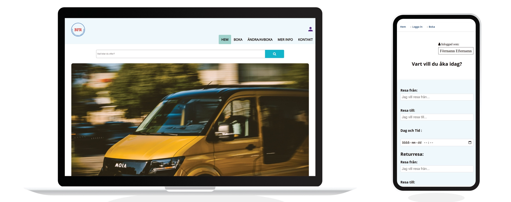
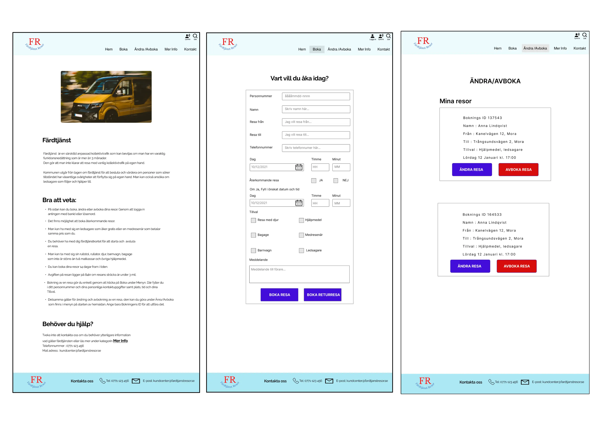
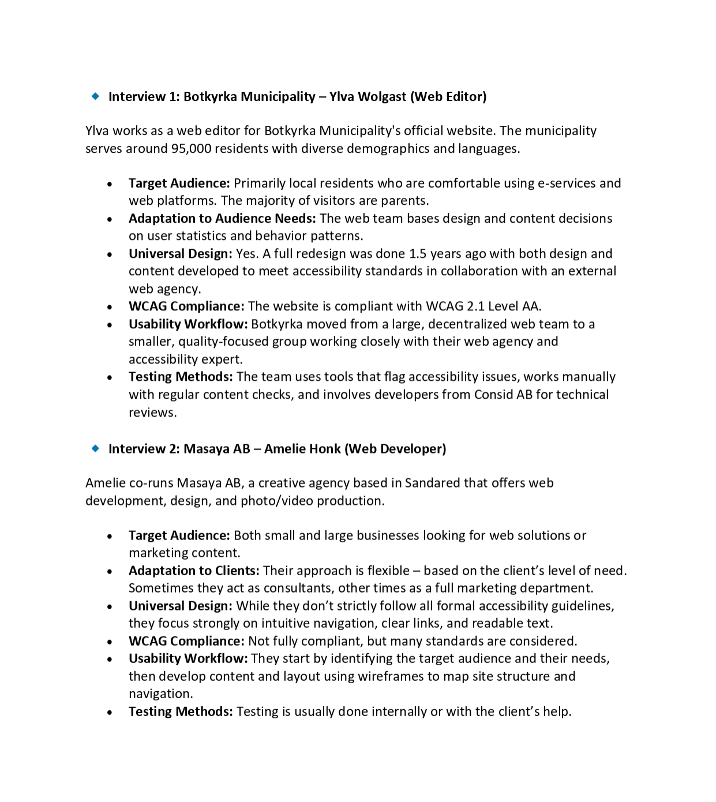

Accessible Transit Booking Project
- Accessibility
- User-Centered Design
- Booking
- Paratransit
- WCAG
- Responsive Design
- Usability
- Prototyping
- Figma

Key Features
- User login and account management
- Booking of one-time, round trip, and recurring paratransit journeys
- Modification and cancellation of bookings
- Information on paratransit regulations and services
- Contact information and accessibility statement
- Compliance with WCAG AA accessibility standards
- Responsive design for cross-device compatibility
- The site should have a well-structured and valid code
- Possibility to manage bookings
Design Process
The design process followed a user-centered approach, incorporating the following stages:
- Research: Gathering information on paratransit services and user needs.
- User Analysis: Developing user personas and scenarios to understand user behavior and requirements.
- Prototyping: Creating interactive prototypes in Figma to test and refine the user interface.
- Development: Implementing the design using HTML, CSS, and JavaScript, with a focus on accessibility and responsiveness.
- Testing: Conducting user testing to evaluate usability and identify areas for improvement.
Wireframes

A screenshot of the booking interface prototype.
Figma Prototype
View the Figma PrototypePersonas
-images-0.jpg)
-images-1.jpg)
User Interviews

Technologies Used
- HTML5
- CSS3
- JavaScript
- Figma (for prototyping)
- WCAG AA guidelines
- Lighthouse
- Studio Visual Code
- Wave
- Color contrast checker
- Web developper extension
Challenges and Solutions
A key challenge was ensuring the website was accessible to users with various disabilities. Solutions included:
- Implementing sufficient color contrast.
- Providing clear and concise text.
- Ensuring keyboard navigation using tabindex.
- Using ARIA attributes for screen reader compatibility.
Another challenge was to create an intuitive booking process. This was addressed through iterative prototyping and user testing, which helped to simplify the forms and navigation.
Website
The complete website for this project can be viewed at the following address:
View The Website